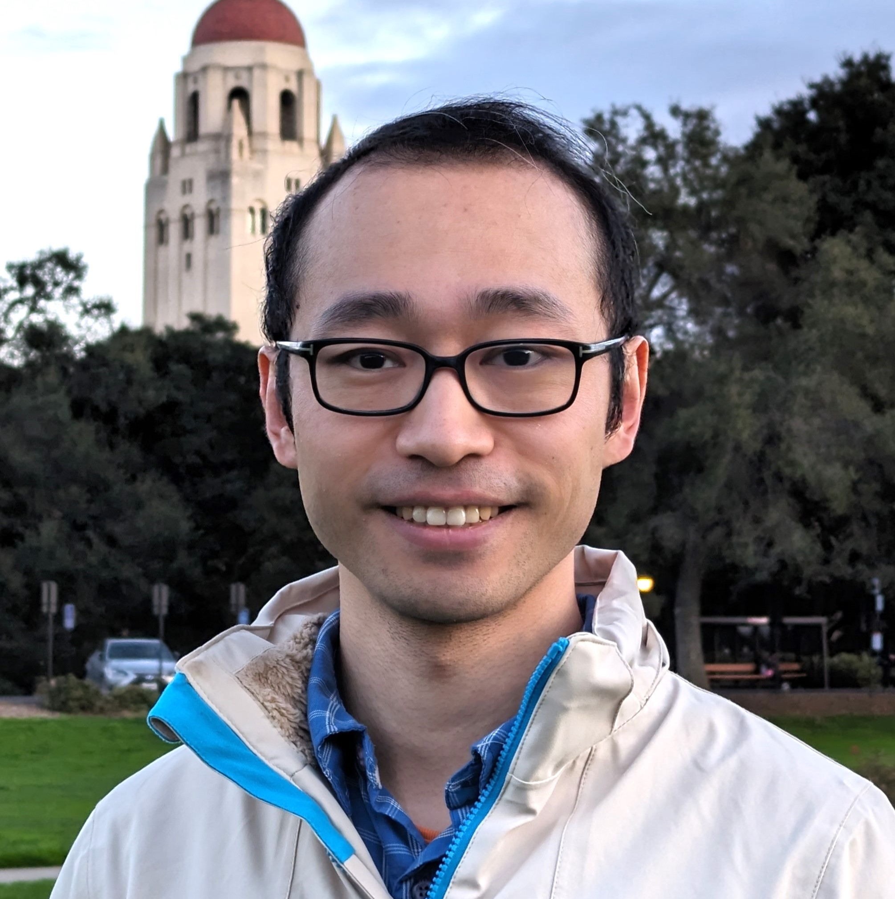

Adaptive robot policies
How can robot policies adapt dynamically at inference time to new tasks, environments, and embodiment variations?

Hi, there! I am currently a postdoctoral fellow at Stanford University, where I am fortunate to be advised by Chelsea Finn and mentored by Yilun Du. Previously, I obtained my PhD from EPFL, where I was fortunate to be advised by Alexandre Alahi, and interned with Francesco Locatello, Chris Russell, and Bernhard Schölkopf.
I will be joining the Department of Computer Science at the National University of Singapore (NUS) as an Assistant Professor, supported by the Presidential Young Professorship award. We are actively looking for PhD students and research interns to join our LEMA group starting in 2027. If you are interested in joining us or exploring possible collaborations, I would be delighted to hear from you.
My research aims to build intelligent agents that can perceive, reason, and act in the physical world. I am particularly interested in physical intelligence in open dynamic worlds, where robot data is fundamentally limited, while moving objects, partial observability, and other interactive agents are the norm. To address these challenges, my research spans three interconnected elements:
How can robot policies adapt dynamically at inference time to new tasks, environments, and embodiment variations?
How can structured world models help agents anticipate spatial, temporal, and physical interactions before acting?
How can agents verify, curate, and explore informative experiences to continually improve with minimal human supervision?
Our recent research has been recognized with paper awards at workshops at ICLR, CVPR, and RSS, alongside invited talks at OpenAI, NVIDIA, and other institutions..
* Equal contribution. † Equal advising. For the full list, please refer to my Google Scholar.
World Action Verifier: Self-Improving World Models via Forward-Inverse Asymmetry
Scaling Verification Can Be More Effective than Scaling Policy Learning for Vision-Language-Action Alignment
RoboMME: Benchmarking and Understanding Memory for Robotic Generalist Policies
Learning Long-Context Diffusion Policies via Past-Token Prediction
Bidirectional Decoding: Improving Action Chunking via Guided Test-Time Sampling
For prospective students and collaborators interested in embodied agents, robot learning, world models, and self-improving systems, please fill out this form or email me at yuejiang.liu [at] cs.stanford.edu.